2025.12
Conference
AGU Fall Meeting 2025, New Orleans
Presentation on wind-wave-current interactions during tropical cyclones in the South China Sea using COAWST.
Details
News
A reverse-chronological record of selected conference presentations, editorial roles, and awards from the CV.
Conference
Presentation on wind-wave-current interactions during tropical cyclones in the South China Sea using COAWST.
DetailsEditorial
Served as Guest Editor for a special issue connected to water, coastal, and environmental engineering topics.
Special Issue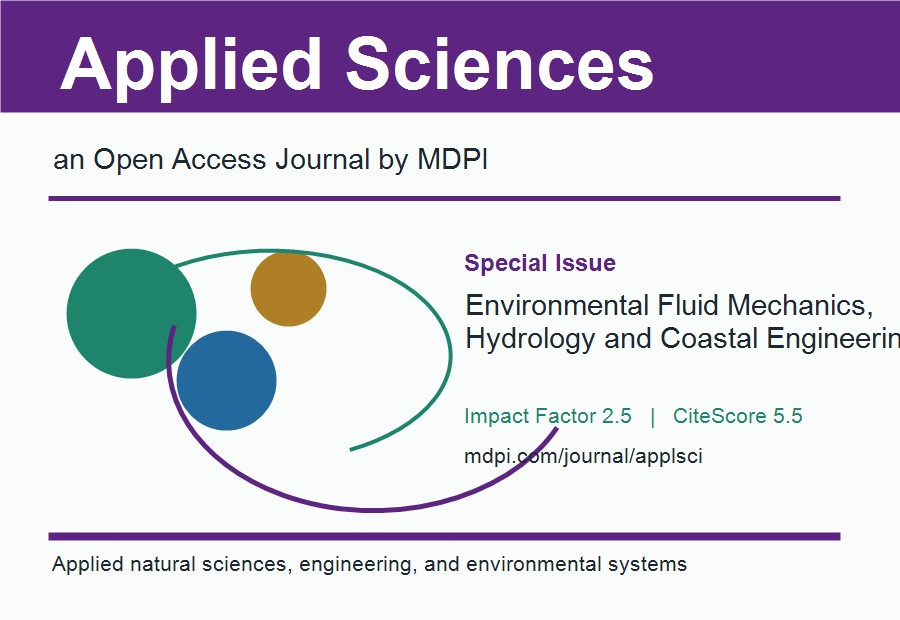
Award
Selected in the 2023 Forbes China 30 Under 30 list, within the Art, Science & Investment category.
Forbes ListNews FeatureConference
Invited talk on exploration of air water resources development and utilization technology.
ZiJin Salon News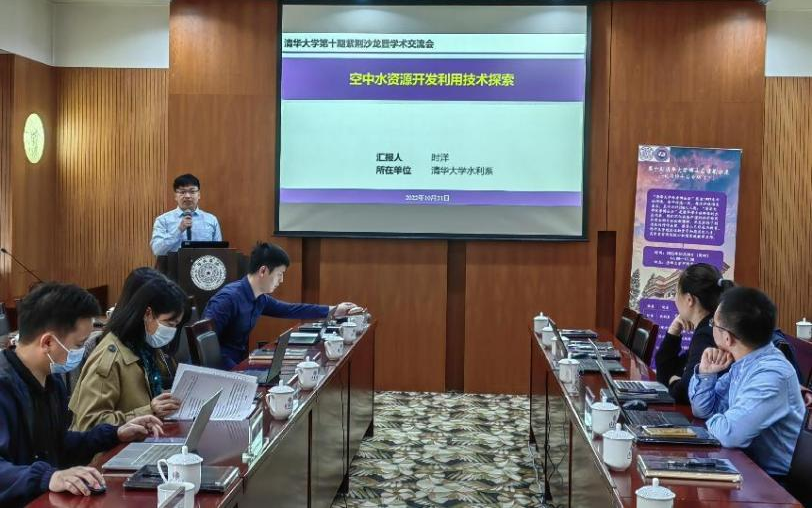
Conference
Lecture on theory, technology, and practice of exploitation and utilization of air water resources.
News Page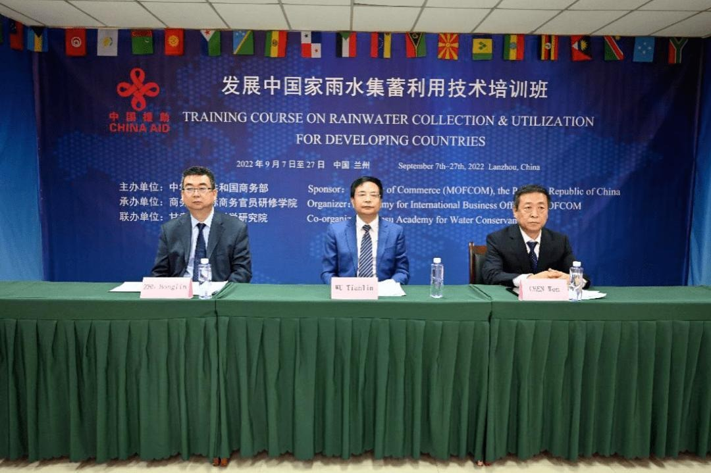
Conference
Presentation on Sky River and air water resource utilization.
Research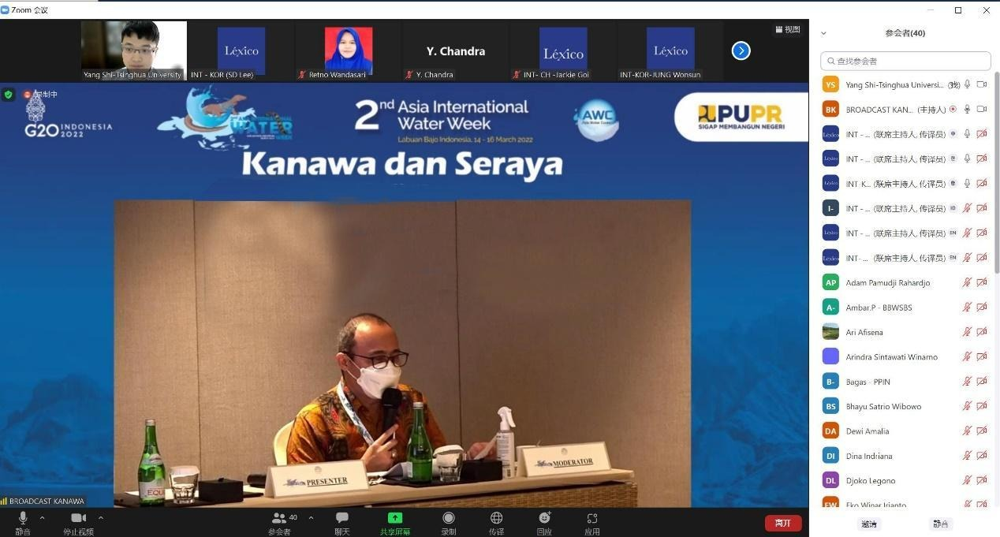
Award
Received the Outstanding Postdoctoral Award at Tsinghua University.
Tsinghua UniversityTsinghua Hydraulic Engineering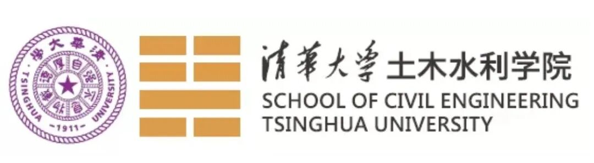
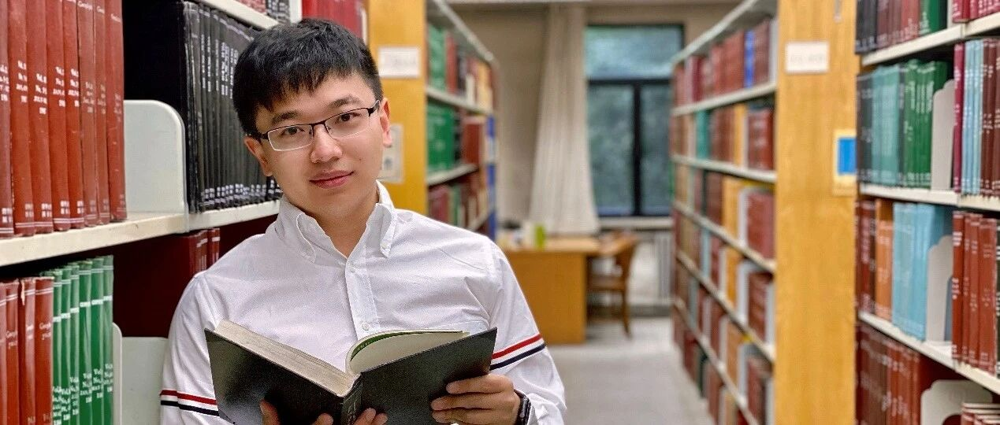
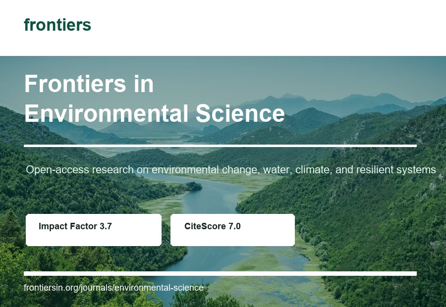
Award
Selected for the Young Elite Scientists Sponsorship Program supported by the China Association for Science and Technology.
Program Page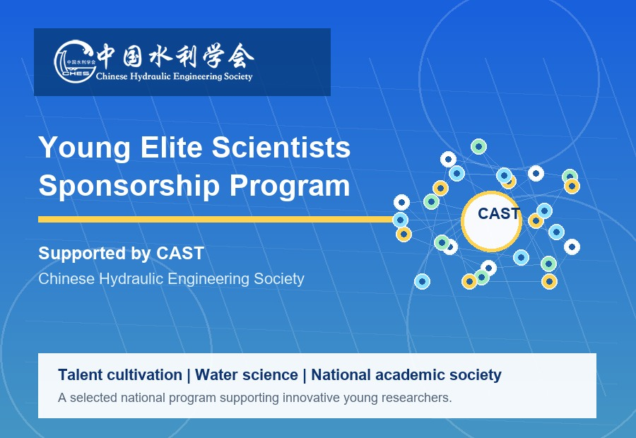
Award
Selected for Tsinghua University's Shuimu Tsinghua Scholar Program, a high-level young scholar development program.
Program Page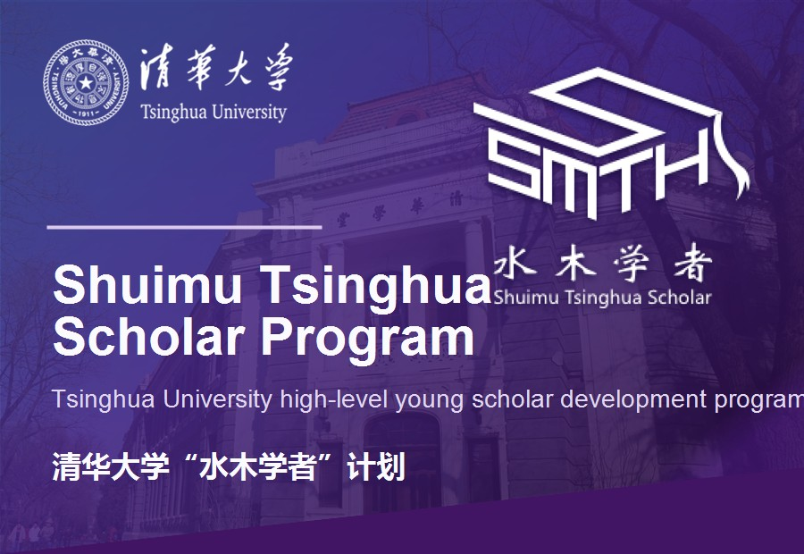
Award
Received postdoctoral support and outstanding graduate recognition from Tsinghua University and Tianjin University.
Tianjin University FeatureTJU News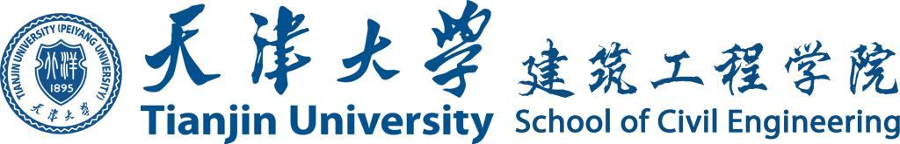
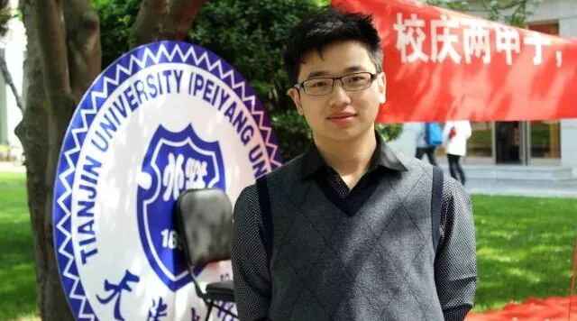